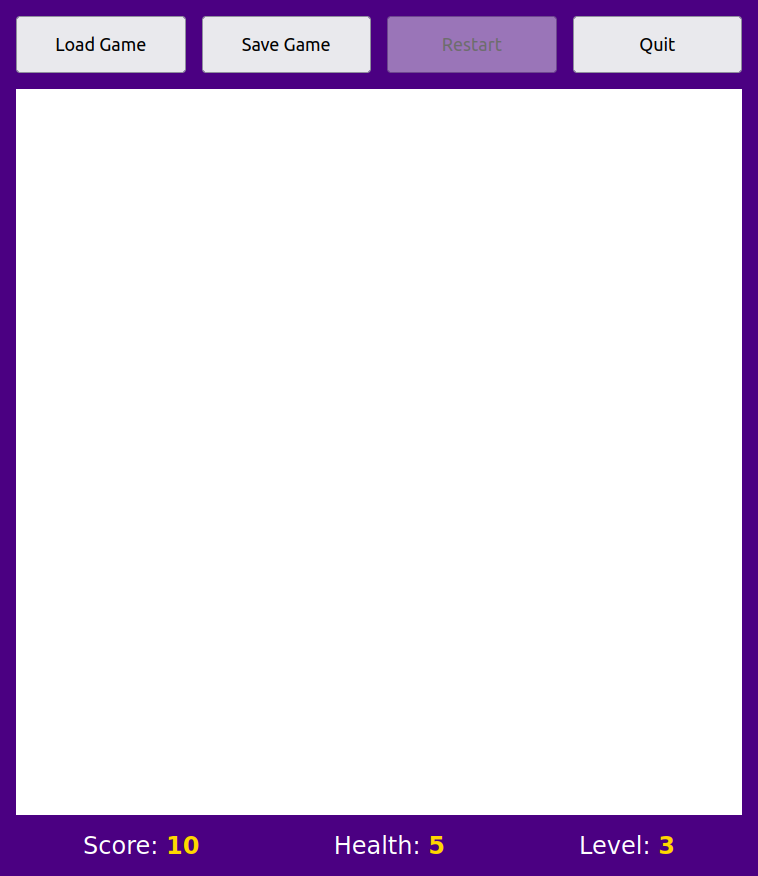

Készíts egy HTML-dokumentumot és egy CSS- vagy SCSS-stíluslapot egy földalatti kalandjáték felhasználói felületének megjelenítéséhez.
Így kell, hogy kinézzen a játék felülete a böngészőben:

A felület körül körbefutó kékes terület és a nyomógombok közötti
hézag szélessége is 1rem kell, hogy legyen. A kékes hátterű
külső elem szorosan kell, hogy közrefogja a tartalmazott elemeket
(width: fit-content).
Az ábrán középen fehér színnel jelölt területet foglalja el a játék egy jelenete. A jelenetet egy olyan táblázat kell, hogy ábrázolja, amelynek 11 sora és oszlopa van.
Valamennyi cella ugyanolyan széles és magas kell, hogy legyen. A cellák mindegyikéhez egy alkalmas (fehértől különböző!) háttérszínt kell beállítani:
Az első/utolsó sor/oszlop cellái falakat ábrázolnak, amelyeket fekete háttérszínnel kell megjeleníteni.
25 vagy több további belső cella ábrázoljon ugyancsak fekete háttérszínnel megjelenő falakat. Úgy kell a falakat elhelyezni, hogy az eredmény egy földalatti kazamatarendszerre hasonlítson.
A többi cellához két vagy több olyan különböző háttérszínt kell beállítani, amelyek az aktuális terepviszonyokat (például kőpadló, víz) tükrözik.
A táblázat nem fal celláit itt található Unicode emoji szimbólumokkal kell feltölteni az alábbiak szerint:
10 vagy több nem fal cella egy szörnyet ábrázoló szimbólumot kell, hogy tartalmazzon. Kétféle szörnyet kell használni (például denevér és pók), mindkét fajtából ugyanannyi legyen. A szörnyekhez itt válassz két szimbólumot.
5 vagy több cella egy bizonyos tárgyat (például gyémánt, régi kulcs) ábrázoló szimbólumot kell, hogy tartalmazzon (itt válassz egyet).
1 cella egy főhőst ábrázoló egyedi szimbólumot (mint például egy álló férfi) kell, hogy tartalmazzon. Az egyediség azt jelenti, hogy ez a szimbólum csak egyszer szerepelhet a táblázatban.
Az eredmény úgy kell, hogy kinézzen, mint egy földalatti kazamatarendszer, ráadásul legyen esztétikus is.
A HTML-dokumentumnak tartalmazni kell egy, a teljes nevedet és a Neptunkódodat tartalmazó alkalmas elemet is, amelyet meg is jelenít a böngésző.
Tilos a HTML-dokumentumban a style
attribútum használata. A könnyű karbantarthatóságához a
dokumentum stilizálása a class attribútum használatán kell,
hogy alapuljon. Kivételt képeznek az egyedi szimbólumok cellái, ezek
stilizálása történhet az id és a class
attribútum együttes használatán.
Tilos a HTML-dokumentumban Unicode emoji szimbólumok
közvetlen megadása. Ezek kizárólag a CSS-stíluslapon adhatók
meg a content tulajdonság értékében. Valamennyi Unicode
emoji szimbólum megadható literálisan vagy a hexadecimális
kódpontjával.
Elutasításra kerülnek (0 pontot érnek) az olyan
megoldások, amelyek nem a class attribútum használatán
alapulnak.
A megoldásban a megfelelő HTML-elemeket kell használni a
megfelelő módon. Például nem használhatók a nyomógombok ábrázolásához
<div> elemek.
A felület felső és alsó részének elrendezéséhez is a Flexboxot kötelező használni.
A forráskódot megfelelően kell formázni, hogy jól átlátható legyen.
Ne feledd, hogy a class HTML-attribútum osztálynevek
egy szóközökkel elválasztott listáját tartalmazhatja, mint például
<td class="swamp frog highlight">.
A class attribútum értékében használj beszédes
osztályneveket.
A kiválasztókban több osztály-kiválasztó is használható, mint
például td.swamp.frog.
Használd a Ctrl+Shift+I billentyűket a forráskód formázásához (Format Document).
Ha a Visual Studio Code-ban egy CSS-tulajdonság nevére mutatsz az egérrel, akkor egy pop-up jelenik meg a tulajdonság rövid leírásával, ahol az MDN Reference linkre kattintva a tulajdonság MDN oldalára lehet navigálni.
Az alábbi két állományt kell feltölteni megoldásként:
.html kiterjesztésű HTML-dokumentumot..css kiterjesztésű
CSS-stíluslapot. Ha Sass-t használsz, akkor pedig egy .scss
kiterjesztésű SCSS-stíluslapot.A három állomány összecsomagolható egyetlen ZIP állományba, de ez nem kötelező.
A Moodle nem enged kettőnél több állományt feltölteni.
Kizárólag az alábbi webhelyek használhatók:
A megoldás feltöltésére szolgáló Moodle tevékenység.
Az órai feladatok megoldásai innen: https://arato.inf.unideb.hu/jeszenszky.peter/webtech/lab/
A középső rész 4%-ot ér: 2% szerezhető a HTML-kódra és 2% a CSS-kódra.
A felső és alsó rész is 2%-ot ér: 1% szerezhető a HTML-kódra és 1% a CSS-kódra.